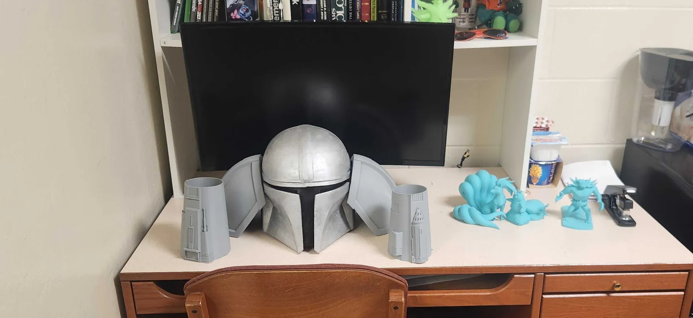
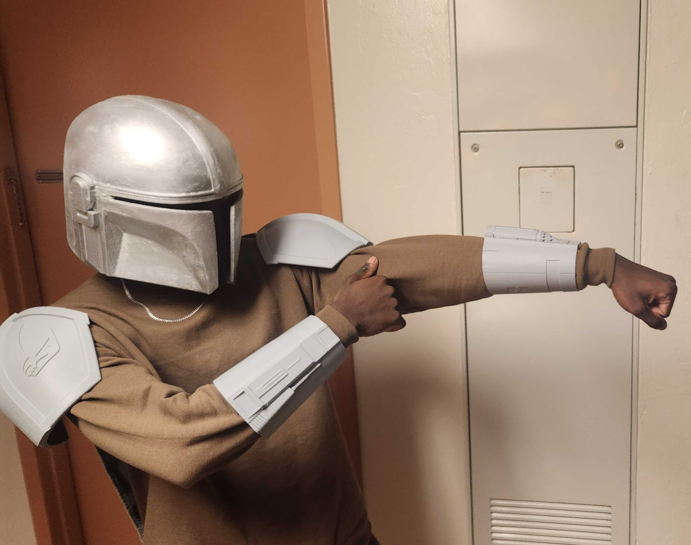
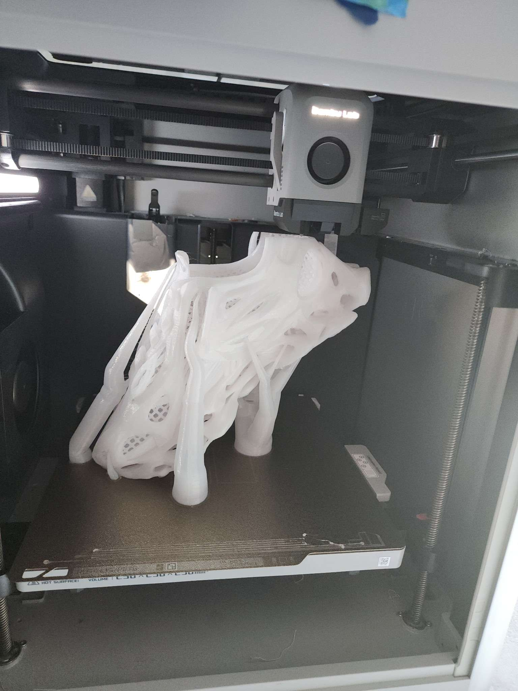
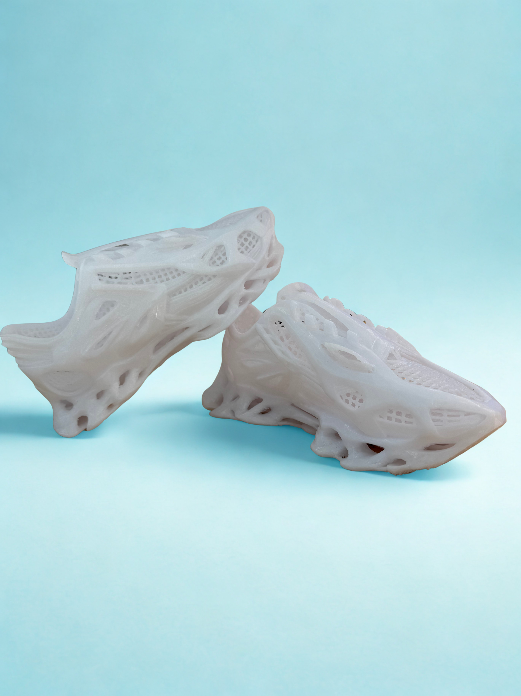
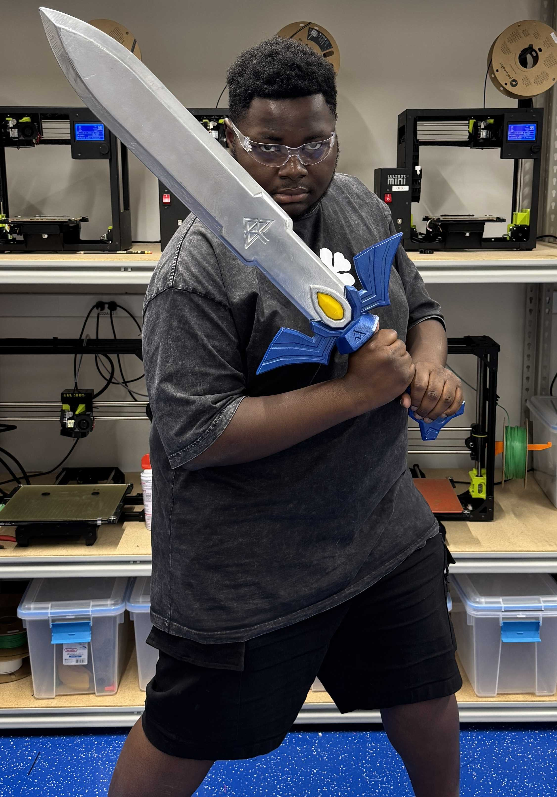
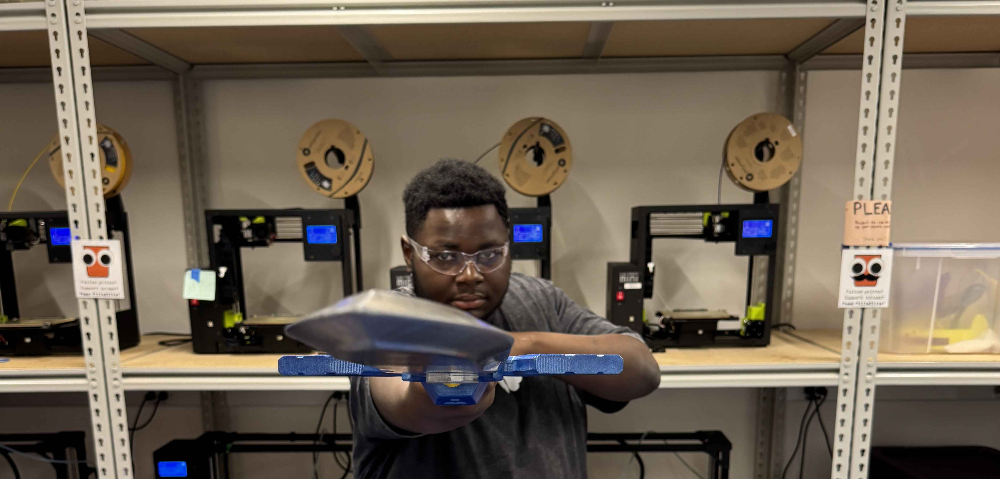

Full cosplay armor set modeled in CAD and 3D-printed in PLA, then sanded, primed, and painted to match screen-accurate Mandalorian aesthetics. Designed to be wearable with custom fit adjustments for each panel.

Mandalorian Armor — Front
Full chest and shoulder assembly, PLA printed & painted

Mandalorian Armor — Detail
Surface finish after sanding, priming, and weathering
A fully custom-designed shoe sole and upper structure, modeled to fit and printed in flexible TPU. This project explored ergonomic form fitting, flexible filament printing parameters, and post-processing for wearable parts.

Print in Progress
TPU sole mid-print — layer adhesion and flex tuning

Final Result
Completed shoe — custom fit, flexible sole, wearable
A multi-part replica swords printed in sections and assembled with structural inserts. The project required careful tolerancing of interlocking joints and extensive post-processing — sanding, priming, filling, and metallic paint finishing — to achieve a realistic prop appearance.

Sword — Full Length
Assembled multi-part print, raw off the printer

Sword — Guard Detail
Guard and grip assembly — interlocking joint design

Sword — Finished
Final result after sanding, priming, and metallic finishing